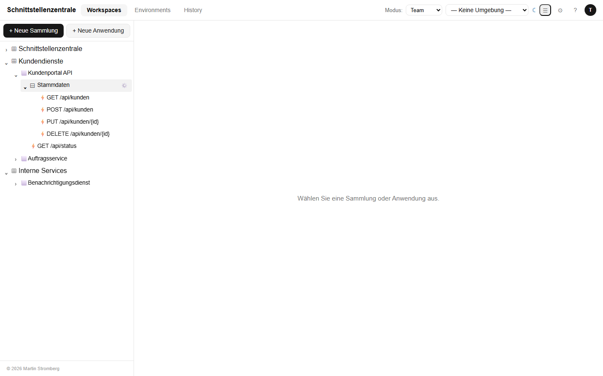
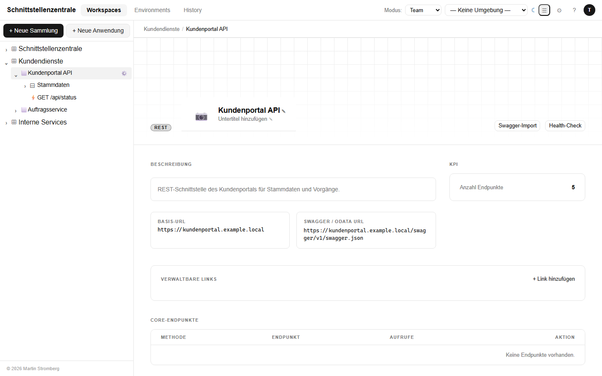
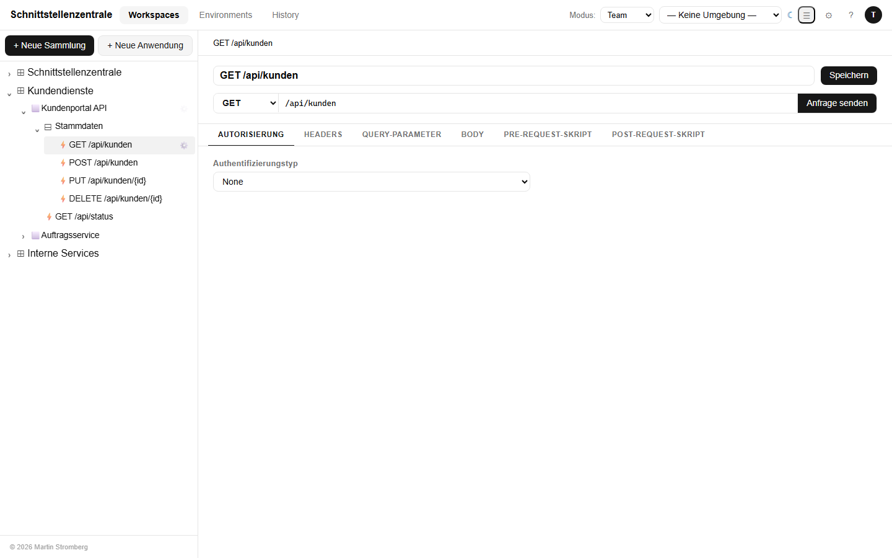
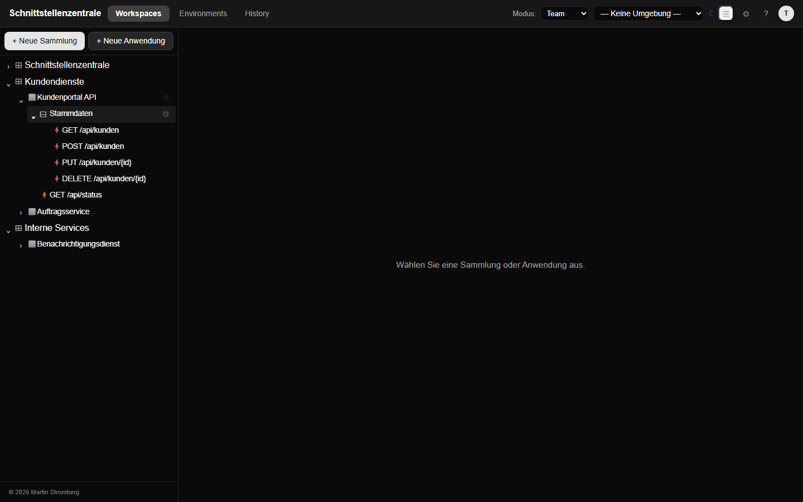

Webservice-Endpunkte zentral verwalten
Die Schnittstellenzentrale ist eine Blazor-Server-Anwendung zur zentralen Verwaltung lokaler Webservice-Endpunkte. Sie ermöglicht das Anlegen, Gruppieren und direkte Ausführen von HTTP-Endpunkten mit verschiedenen Authentifizierungstypen, den Import aus Swagger/OpenAPI- und OData-Definitionen sowie Echtzeit-Synchronisation im Teammodus über SignalR.

Features
Alles, was Teams für die tägliche Arbeit mit lokalen Webservices brauchen — in einer Oberfläche.
Workspaces
Anwendungen in Sammlungen organisieren, Endpunkte anlegen und direkt ausführen — das letzte Ergebnis bleibt pro Sitzung sichtbar.
Environments
Systemumgebungen mit Variablentabellen verwalten und Platzhalter in Endpunktpfaden automatisch auflösen.
History
Vollständige Aufrufhistorie mit Zeitraumfilter und Top-5-Auswertung je Anwendung.
Swagger- und OData-Import
Endpunkte aus Swagger/OpenAPI- oder OData-$metadata-Definitionen importieren — mit Diff-Vorschau und selektiver Übernahme.
OData v4-API
Vollständiger OData-v4-Service unter /odatav4 mit CSDL-Metadaten, CRUD-Zugriff und allen Abfrageoptionen.
Authentifizierungstypen
None, Basic, Negotiate, BearerToken und Negotiate mit Impersonation — Zugangsdaten liegen sicher im Windows Credential Manager.
Team- und Benutzermodus
Umschaltung zwischen globalem und benutzerspezifischem Speicherbereich; die Wahl wird im Browser gespeichert.
Echtzeit-Synchronisation
SignalR-basiertes Broadcasting verteilt Änderungen sofort an alle verbundenen Sitzungen im Teammodus.
Health-Check & mehr
Erreichbarkeitsprüfung mit Cooldown, Icons und Links je Anwendung, Impressumsseite sowie eine deutsch- und englischsprachige Oberfläche mit Dark Mode.
Screenshots
Ein Blick in die Anwendung — Workspaces, Anwendungsdetail und Endpunktansicht, hell und dunkel.




Download
Aktuelles Release
Das jeweils aktuelle Release steht auf GitHub bereit. Das ZIP-Asset
Schnittstellenzentrale-vX.Y.Z.zip enthält die veröffentlichte
Anwendung für Windows / IIS — herunterladen, entpacken, konfigurieren, starten.